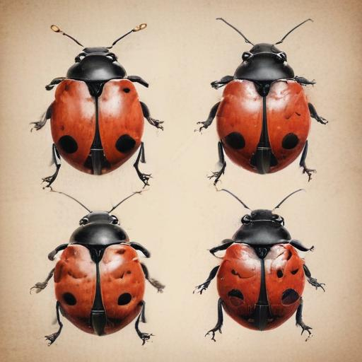
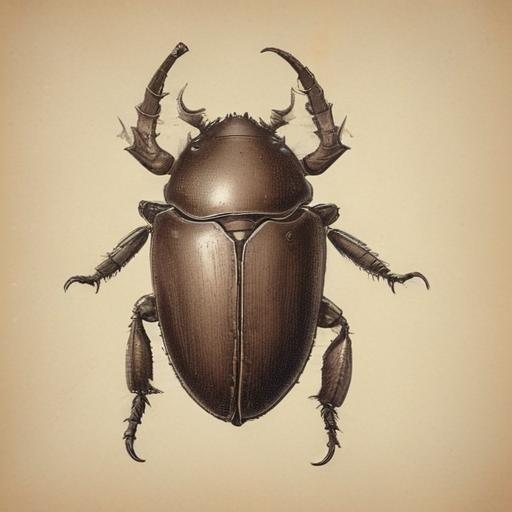

딱정벌레에 대해 알아보아요
딱정벌레는 단단한 겉날개를 가진 곤충이에요. 다양한 크기와 모양을 가진 딱정벌레들이 있어요.
다양한 딱정벌레 친구들

무당벌레
빨간 날개에 검은 점이 있는 귀여운 딱정벌레예요.
- 빨간색 날개에 검은 점이 있어요
- 진딧물을 잡아먹어요
- 농부의 좋은 친구예요
- 위험할 때 노란 액체를 내보내요

장수풍뎅이
수컷은 긴 뿔이 있는 큰 딱정벌레예요.
- 수컷은 머리에 긴 뿔이 있어요
- 나무의 수액을 먹어요
- 밤에 활동하는 야행성이에요

사슴벌레
사슴 뿔처럼 생긴 큰 턱을 가진 딱정벌레예요.
- 수컷은 큰 턱이 있어요
- 나무의 수액을 좋아해요
- 숲에서 살아요
재미있는 사실들
🛡️ 단단한 갑옷
딱정벌레의 겉날개는 단단한 갑옷처럼 몸을 보호해줘요!
💪 힘센 다리
많은 딱정벌레들이 자기 몸무게보다 무거운 것을 들 수 있어요!
🌳 숲의 청소부
딱정벌레들은 죽은 나무나 식물을 먹어 숲을 깨끗하게 해줘요!